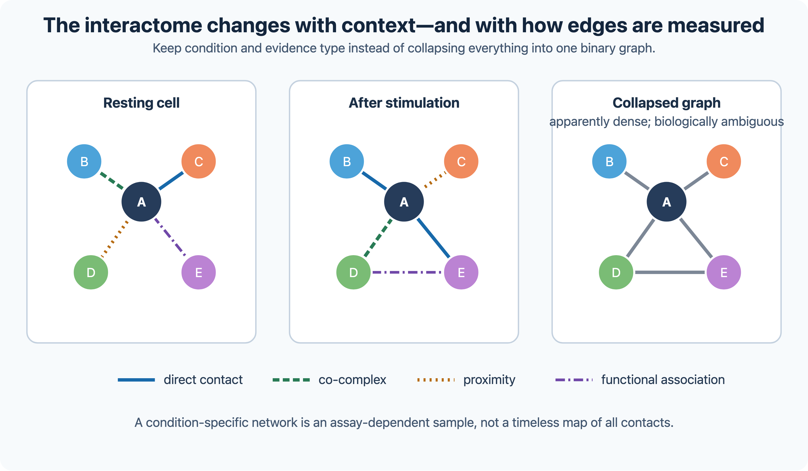
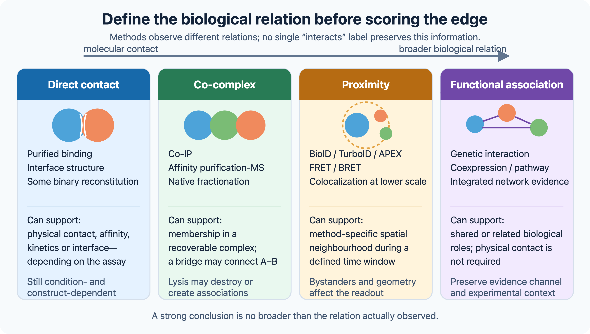

11 Protein–protein interactions
Experimental and computational methods to analyse which proteins interact and how.
11.1 Overview
Proteins rarely act alone. The word interaction, however, is used for relationships of very different kinds, which are not interchangeable:
- direct physical binding between two proteins;
- co-complex membership, in which two proteins belong to the same complex without necessarily touching;
- genetic interaction, in which mutations in two genes have a combined effect on the phenotype that differs from the expected one;
- regulatory influence, in which one gene product changes the expression or activity of another;
- functional association, in which two proteins take part in the same process.
Each experimental and computational method detects one or a few of these, and many errors in interpreting interaction data come from confusing them. The chapter is broad. It covers:
- experimental methods: yeast two-hybrid, affinity purification–mass spectrometry (AP-MS) and related methods, hu.MAP, errors, biases and coverage, binding affinity, live-cell proximity and validation, genetic interactions, and gene regulatory networks inferred from perturbations (Section 11.2);
- networks: interactome maps, network concepts and their critics, functional association networks and Bayesian integration, pathway and network enrichment analysis, network medicine, systems biology and flux balance analysis, and dynamic models of regulatory networks (feedback, switches, oscillators, robustness and parameter estimation) (Section 11.3);
- prediction methods: interfaces, genomic context, coevolution, docking, deep learning with AlphaFold, and how predictions are evaluated (Section 11.4).
The interaction databases are described in Section 2.7, the mass spectrometry methods in Section 8.5, and the structure prediction methods on which complex prediction builds in Chapter 9.
11.2 Experimental methods
Every computational analysis of interactions starts from experimental data, and inherits their errors. Most proteins work with others: in stable complexes such as the ribosome, in transient signalling interactions, or as enzymes acting on protein substrates. Mapping which proteins interact, and how, helps to explain cellular machinery and to annotate unknown proteins (Section 10.4). Each experimental method measures a different kind of interaction. This section describes the main methods for physical interactions, their errors and biases, how binding is quantified and validated, genetic interactions, and the inference of regulatory networks from perturbations.
11.2.1 Binary interactions: yeast two-hybrid
The yeast two-hybrid (Y2H) system, introduced by Stanley Fields in 1989 (Fields and Song 1989), exploits the modular structure of transcription factors. The DNA-binding domain of the yeast factor Gal4 is fused to one protein (the bait) and its activation domain to another (the prey). Only if bait and prey bind each other is a functional transcription factor reconstituted. It switches on a reporter gene that allows the yeast to grow on selective medium. Y2H tests one pair at a time and therefore enriches for binary, often direct, interactions. It can be run as large matrix screens of thousands of baits against thousands of preys.
A positive result does not prove direct contact in the native cellular context. An endogenous yeast protein can bridge bait and prey, the fusion proteins are expressed outside their normal location and at unnatural levels, and some baits activate the reporter on their own (auto-activation). The fusions can also misfold or hide the binding site, which causes false negatives.
The first proteome-scale screens were done in yeast (Uetz et al. 2000; Ito et al. 2001), and later for human proteins (Rual et al. 2005). The results were noisy: the two yeast screens overlapped little, and Y2H data were widely regarded as unreliable. Marc Vidal’s group showed that careful screening, retesting and an empirical framework for estimating precision and sensitivity gave high-quality data. The low overlap mostly reflected low sensitivity, since each screen samples only a fraction of all interactions (Yu et al. 2008; Braun et al. 2008; Venkatesan et al. 2008). The human reference interactome HuRI screened about 17 500 proteins against each other and reported about 53 000 binary interactions (Luck et al. 2020), following an earlier map of the same kind (Rolland et al. 2014).
Y2H has its own biases. Interactions are tested in the yeast nucleus, so membrane proteins, interactions that require post-translational modifications or other partners, and proteins that activate transcription by themselves are problematic. Split-ubiquitin variants handle membrane proteins (Stagljar et al. 1998). In the protein-fragment complementation assay (PCA), two halves of a reporter enzyme are fused to the proteins and reassemble when the proteins meet, so interactions are tested in their normal cellular location (Tarassov et al. 2008).
11.2.2 Co-complex interactions: affinity purification–mass spectrometry
In affinity purification–mass spectrometry (AP-MS), a tagged bait is purified from cells together with the proteins bound to it, which are identified by mass spectrometry (Section 8.5). The tandem affinity purification (TAP) tag, with two successive purification steps, made it possible to isolate complexes under near-native conditions (Rigaut et al. 1999). It was used for the first proteome-scale maps of yeast complexes (Gavin et al. 2002; Ho et al. 2002; Krogan et al. 2006). In human cells, the BioPlex project has purified 10 128 baits in HEK293T cells and 5522 in HCT116 cells (Huttlin et al. 2015, 2021).
AP-MS reports co-complex membership: a prey can bind the bait directly or through other proteins. This is the key contrast with Y2H. Y2H tests pairs and enriches for direct binary contacts; AP-MS finds the proteins that co-purify with the bait, without telling which of them touch each other. A purified complex with \(n\) components can be represented in two ways, which give very different numbers of “interactions”. The spoke model connects the bait to every prey (\(n-1\) edges); the matrix model connects all pairs (\(n(n-1)/2\) edges), most of which are not direct contacts. Contaminants and abundant sticky proteins are removed by statistical scoring against control purifications (Section 8.5).
Three complementary MS methods, co-fractionation of native complexes, proximity labelling and cross-linking MS (O’Reilly and Rappsilber 2018), are described in Section 8.5. They too measure different things. Co-fractionation finds proteins that elute together. Proximity labelling finds proteins that were near the bait, within roughly 10–20 nm (citation needed), not necessarily bound to it. Cross-linking MS links interaction mapping to structure: it covalently joins residues that are close in space, so each identified cross-link shows not only that two proteins are near each other but also which of their residues are, typically within about 30 Å. These distance restraints can be collected in intact cells and used to dock or model the complex (Section 11.4).
hu.MAP integrates thousands of AP-MS, co-fractionation and proximity labelling experiments with machine learning to predict human complexes (Drew et al. 2017, 2021; Fischer et al. 2025); how the map is built is described in Section 8.5. For network analysis, hu.MAP provides complexes with confidence levels, which complement the binary map of HuRI and the pull-downs of BioPlex.
11.2.3 Errors, biases and coverage
Early comparisons of yeast interaction data sets found that they overlapped surprisingly little, and estimated high rates of false positives and false negatives (Mering et al. 2002). Several lessons have emerged since then:
- Different methods measure different things. Binary Y2H interactions and co-complex AP-MS associations are not expected to agree, and both differ from functional associations in networks such as STRING (Section 11.3).
- Low overlap often means low sensitivity, not low precision. Each screen detects only part of the interactome, so two good screens can overlap little (Venkatesan et al. 2008).
- Literature-curated data are biased. Well-studied proteins, such as cancer genes, have many reported interactions because many experiments were done on them, which creates artificial hubs. Systematic screens, in which every pair is tested equally, avoid this study bias (Rolland et al. 2014; Luck et al. 2020).
- Interactions depend on context. Two proteins can interact only if they are expressed in the same cell, at the same time and in the same compartment. Many interactions also depend on the isoform, on post-translational modifications or on a stimulus. There is therefore no single, fixed human interactome: each cell type and condition uses a different subset. A static network such as HuRI or BioPlex is a union of interactions observed or possible across many contexts, and many of its edges may never occur in a given cell.
- Interactions are not binary. Databases record an interaction as present or absent, but interactions differ by many orders of magnitude in strength and lifetime. Dissociation constants range from picomolar or tighter for stable complexes to micromolar or weaker for transient signalling interactions. Residence times range from milliseconds to the lifetime of the protein, and complexes have defined stoichiometries (for example two copies of one subunit and one of another). Which interactions an assay detects depends on its sensitivity to weak and transient binding.

Strength and lifetime are not measured by the large screens; they need the methods below.
11.2.4 Binding affinity, live-cell proximity and validation
Large-scale screens show whether two proteins associate, not how strongly, for how long or where. For a reversible 1:1 interaction \(A + B \rightleftharpoons AB\), the dissociation constant is \(K_d = [A][B]/[AB] = k_\text{off}/k_\text{on}\) (Section 9.2). If \(B\) is in excess and \(A\) has a single binding site, the fraction of \(A\) that is bound is
\[ f_\text{bound} = \frac{[B]}{K_d + [B]}, \]
so half of \(A\) is bound when the free concentration of \(B\) equals \(K_d\). Whether an interaction occurs in a cell therefore depends on local concentrations as much as on affinity. Two interactions with the same \(K_d\) can also have very different lifetimes (\(1/k_\text{off}\)). The equation assumes one independent site at equilibrium; cooperativity, multivalency (avidity) and competition between partners break it.
Affinity and kinetics are measured with purified proteins. Surface plasmon resonance and biolayer interferometry immobilise one partner and follow binding of the other in real time, which gives \(k_\text{on}\) and \(k_\text{off}\). Isothermal titration calorimetry measures the heat of binding, which gives \(K_d\), the stoichiometry and the enthalpy. These assays show direct binding under the assay conditions, but not that it happens in the cell.
In living cells, proximity can be measured with fluorescent tags. In Förster resonance energy transfer (FRET), an excited donor fluorophore transfers energy to a nearby acceptor with efficiency
\[ E = \frac{1}{1 + (r/R_0)^6}, \]
where \(r\) is the donor–acceptor distance and \(R_0\), the Förster distance at which \(E = 0.5\), is a few nanometres for common pairs (Stryer and Haugland 1967). The sixth-power dependence makes FRET sensitive only within a narrow range of distances. Bioluminescence resonance energy transfer (BRET) uses a luciferase as donor, which avoids exciting the sample with light. A positive signal shows that the tags were close, which overexpression and molecular crowding can also cause; a negative signal can reflect unfavourable tag geometry. Donor-only controls, non-binding mutants and titration of expression levels help to tell these apart. Proximity labelling (Section 8.5) records which proteins were near a bait during a labelling window rather than which bind it. The window is hours for BioID (Roux et al. 2012), about ten minutes for TurboID (Branon et al. 2018), and about a minute for the peroxidase APEX, which requires hydrogen peroxide (Rhee et al. 2013).
Confidence grows when methods with different failure modes agree. Repeating Y2H with another complementation assay adds little, because both share the artefacts of fusion proteins. Co-immunoprecipitation (co-IP) and AP-MS share the artefacts of cell lysis, and two databases may report the same original paper. A strong chain of evidence might combine discovery by AP-MS, reciprocal co-IP of the endogenous proteins, binding of the purified proteins, and mutations of interface residues that abolish binding without unfolding either protein. A functional defect that is rescued by the wild-type but not by the mutant protein completes it. A single negative result rarely rules out an interaction, since every method has blind spots.

The last category in Figure 11.2, functional association without contact, is measured most directly by genetic interactions.
11.2.5 Genetic interactions
A genetic interaction occurs when the combined effect of mutations in two genes differs from what is expected from their individual effects. In synthetic lethality, two mutations that are harmless alone kill the cell together. Genetic interactions do not imply physical contact, but they reveal functional relationships: genes with similar profiles of genetic interactions tend to work in the same pathway or complex. A map of almost all pairwise genetic interactions in yeast showed a hierarchy of functional modules (Costanzo et al. 2016). Synthetic lethality is also a strategy for cancer therapy: a drug targets a gene whose synthetic-lethal partner is mutated in the tumour, as PARP inhibitors do in tumours with BRCA1 or BRCA2 mutations.
Quantitatively, a genetic interaction is a deviation from a null model. If \(w_A\), \(w_B\) and \(w_{AB}\) are the fitness of the single and double mutants relative to the wild type, the usual multiplicative model expects \(w_{AB} = w_A w_B\), and the interaction score is \(\varepsilon_{AB} = w_{AB} - w_A w_B\). Negative scores (aggravating interactions, with synthetic lethality as the extreme case) often connect genes in parallel, buffering pathways. Positive scores (alleviating interactions) often connect genes in the same pathway or complex, where losing one gene already disables the whole. An additive or logarithmic null model gives different scores, so which pairs “interact” depends on the model chosen.
Genetic interactions, like physical ones, have no direction. Regulatory interactions do, and inferring them is the last topic of this section.
11.2.6 Gene regulatory networks and inference from perturbations
A gene regulatory network (GRN) describes which transcription factors regulate which genes. Its edges are directed and signed (activation or repression), unlike the undirected edges of protein interaction networks. Regulatory interactions can be measured directly, for example by ChIP-seq of transcription factors, but they are often inferred from expression data.
- Correlation and information-based methods connect genes whose expression co-varies across many samples. ARACNE uses mutual information and removes indirect links with the data-processing inequality (Margolin et al. 2006). GENIE3 predicts the expression of each gene from all others with random forests and ranks the regulators by importance (Huynh-Thu et al. 2010). Neither gives the direction of an edge reliably.
- Perturbation-based methods use experiments in which genes are knocked down, knocked out or overexpressed. Because the experimenter sets the cause, these data can reveal the direction of regulation, which correlations cannot. The idea was formalised for systematic perturbations of the yeast galactose pathway (Ideker et al. 2000; Ideker et al. 2001), and early methods fitted linear dynamical models to the responses to known perturbations (Gardner et al. 2003; Tegnér et al. 2003).
- Single-cell perturbation screens, such as Perturb-seq, combine pooled CRISPR perturbations with single-cell RNA-seq, so that the transcriptional effect of each perturbation is read out in the same cells (Dixit et al. 2016). Genome-scale Perturb-seq has measured the effect of perturbing essentially every expressed gene in a human cell line (Replogle et al. 2022).
Network inference is notoriously difficult. The DREAM5 challenge compared dozens of methods on simulated and real data. No single method was best, performance on real data was modest, and a consensus of several methods (“the wisdom of crowds”) was most robust (Marbach et al. 2012). Benchmarks on single-cell data reached similar conclusions (Pratapa et al. 2020). Inferred networks are therefore hypotheses, and their accuracy depends strongly on how much of the network was actually perturbed. How regulatory and physical networks are analysed is the subject of Section 11.3.
See also: further explanation in Section D.11.1; related Wikipedia articles in Section E.11.1.
Parts of this section are adapted from the Wikipedia articles Protein–protein interaction, Two-hybrid screening, Tandem affinity purification, Synthetic lethality and Gene regulatory network (CC BY-SA 4.0, retrieved 4 October 2026). Parts of this section are adapted from Matteo Tadiello, Modern Bioinformatics: From Foundations to Frontiers, chapter “Molecular Interactions: Experiments, Structures, and Networks” (CC BY 4.0), used with permission.
11.3 Networks
Single interactions become informative when they are put together. Interactions form networks, and network science provides the concepts and tools to study them (Barabási and Oltvai 2004). This section describes the large interactome maps, the main properties of biological networks and their critics, functional association networks that integrate many kinds of evidence, and the use of networks to interpret gene lists and find disease genes. It ends with quantitative models: constraint-based models of metabolism and dynamic models of regulatory and signalling networks.
11.3.1 Interactome maps and databases
Three large, systematic maps of human protein interactions, introduced in Section 11.2, are the references for network analysis today:
- HuRI, the binary interactome from systematic yeast two-hybrid screens (Luck et al. 2020);
- BioPlex, the co-complex network from AP-MS in two cell lines (Huttlin et al. 2021);
- hu.MAP, protein complexes integrated from many MS experiments (Fischer et al. 2025).
These are complemented by curated databases of interactions reported in the literature, such as IntAct and BioGRID, and by functional association networks, such as STRING and FunCoup, which are described as resources in Section 2.7.
11.3.2 Network concepts
A network (graph) consists of nodes (proteins or genes) and edges (interactions). Edges may be undirected (physical binding), directed (regulation, signalling) or weighted (confidence). The main descriptive properties are:
- The degree \(k\) of a node is its number of edges, and the degree distribution \(P(k)\) the fraction of nodes with degree \(k\). In a random (Erdős–Rényi) graph, degrees follow a Poisson distribution around the mean.
- Scale-free networks have a power-law degree distribution, \(P(k) \propto k^{-\gamma}\), so that most nodes have few links and a few hubs have very many. Barabási and Albert showed that such networks arise from preferential attachment: new nodes link preferentially to nodes that already have many links (Barabási and Albert 1999). In the early 2000s, metabolic and protein interaction networks were reported to be scale-free (Jeong et al. 2000, 2001). Gene duplication, in which a copied gene inherits the interactions of its parent, was proposed as a biological mechanism for preferential attachment (Vázquez et al. 2002; Pastor-Satorras et al. 2003). Whether these networks are scale-free at all is now disputed (see the end of this subsection).
- The clustering coefficient of a node is the fraction of pairs of its neighbours that are themselves connected: for a node \(i\) with \(k_i\) neighbours and \(e_i\) edges among them, \(C_i = 2e_i / [k_i(k_i-1)]\). A small-world network combines high clustering with short paths between most nodes. The property was first described for networks that include the neural network of C. elegans (Watts and Strogatz 1998), and most biological networks share it.
- Centrality measures how central a node is in the graph, for example by its degree or by the number of shortest paths passing through it. The betweenness of node \(i\) is \(C_B(i) = \sum_{s \ne i \ne t} \sigma_{st}(i)/\sigma_{st}\), where \(\sigma_{st}\) is the number of shortest paths between nodes \(s\) and \(t\) and \(\sigma_{st}(i)\) the number of those that pass through \(i\). Centrality describes a position in one particular graph; it is not a measure of biological importance.
- Modules or communities are groups of nodes more densely connected to each other than to the rest, often corresponding to complexes or pathways. They are found with clustering algorithms such as Girvan–Newman edge removal (Girvan and Newman 2002) and the Markov cluster algorithm (Enright 2002), first used to cluster protein families. Many methods maximise the modularity \(Q = \frac{1}{2m}\sum_{ij}\left(A_{ij} - \frac{k_i k_j}{2m}\right)\delta(c_i, c_j)\), where \(A\) is the adjacency matrix, \(m\) the number of edges and \(\delta(c_i, c_j) = 1\) if nodes \(i\) and \(j\) are in the same module (0 otherwise). \(Q\) is the fraction of edges that fall within modules minus the fraction expected in a random network with the same degrees. A module found in this way is a hypothesis, not necessarily a complex. Metabolic networks show a hierarchical organisation of modules (Ravasz et al. 2002).
- Network motifs are small subgraphs, such as the feed-forward loop in transcriptional networks, that occur much more often than in randomised networks with the same degrees (Milo et al. 2002).
Early studies linked network position to biology. In yeast, hubs were found to be more often essential than other proteins, a correlation that became known as the centrality–lethality rule (Jeong et al. 2001). Hubs were divided into party hubs, which interact with their partners at the same time, inside complexes, and date hubs, which bind different partners at different times (Han et al. 2004). Hubs are enriched in long and multidomain proteins and in domain repeats, and date hubs more often have long disordered regions than party hubs (Ekman et al. 2006). Interactions between hubs were found to be rarer than expected (Maslov and Sneppen 2002).
Many of these conclusions have been questioned. Interaction maps are incomplete and biased, so the observed network is a sample of the true one, and sampling can create or hide apparent power laws (Hakes et al. 2008; Lima-Mendez and Helden 2009). A heavy-tailed degree distribution is not necessarily a power law: other distributions, such as the log-normal or a power law with an exponential cut-off, often fit the data as well or better. A systematic analysis of nearly a thousand networks from many fields found that strongly scale-free networks are rare (Broido and Clauset 2019). Hubs in literature-curated networks partly reflect study bias (Section 11.2).
The same biases confound the centrality–lethality correlation. Essential proteins are studied more, and therefore accumulate more reported interactions. When AP-MS data are represented with the matrix model, every member of a large complex becomes a hub, and many large complexes are essential. The strength of the correlation depends on the data set and the detection method. Even where it holds, it need not reflect network architecture: He and Zhang argued that hubs are more often essential simply because they take part in more interactions, and so more often in one of the few interactions that are themselves essential (He and Zhang 2006). Network properties are therefore best treated as descriptions of a particular data set, compared with appropriate randomised networks, rather than as universal laws.
11.3.3 Functional association networks
Physical interactions are only one kind of evidence that two proteins work together. Others are co-expression, genetic interactions, shared genomic context (Section 10.4), co-occurrence in the literature, shared domains and interactions of orthologues in other species. Functional association networks integrate all of these into a single network in which each edge has a confidence score (Guala et al. 2019).
The integration is usually Bayesian. For each evidence type \(i\), a likelihood ratio is estimated from a gold standard of known positive pairs (for example proteins in the same complex or pathway) and negative pairs:
\[ \text{LR}_i = \frac{P(e_i \mid \text{linked})}{P(e_i \mid \text{not linked})}. \]
If the evidence types are assumed to be independent (naive Bayes), the posterior odds that two proteins are linked are the prior odds multiplied by the likelihood ratios of all the evidence:
\[ \frac{P(\text{linked} \mid e_1, \dots, e_n)}{P(\text{not linked} \mid e_1, \dots, e_n)} = \frac{P(\text{linked})}{P(\text{not linked})} \prod_{i=1}^{n} \text{LR}_i . \]
A link supported by several independent weak signals can therefore become confident. The approach was introduced for yeast (Jansen et al. 2003; Lee et al. 2004). FunCoup, developed by Erik Sonnhammer’s group in Stockholm, applies it across many species and evidence types, and transfers evidence between species by orthology (Alexeyenko and Sonnhammer 2009; Buzzao, Persson, et al. 2024). STRING uses a similar scheme, with scores for each evidence channel combined into an overall confidence (Szklarczyk et al. 2024). If the channel scores \(s_i\) are treated as independent probabilities, the combined score is \(1 - \prod_i (1 - s_i)\), the probability that at least one channel is right, computed after the prior probability that two random proteins are linked has been removed from each channel. Independence is not exact, for example because co-expression and shared pathway membership are correlated, and the networks reflect the biases of their gold standards.
An edge in such a network means that two proteins probably work together, not that they bind each other. Functional association networks are used to predict function by guilt by association (Section 10.4), to predict the phenotypes of perturbations (Lee et al. 2008), to interpret gene lists from expression or genetic screens, and to prioritise disease genes. The last two uses are the subject of the rest of this section.
11.3.4 Pathways, gene sets and network enrichment
Gene lists from expression, proteomics or genetic screens are usually interpreted with gene sets: GO terms and pathways from KEGG and Reactome (Section 2.6). Over-representation analysis with the hypergeometric test, gene set enrichment analysis (GSEA), and the choice of background and threshold are described in Section 7.5. Several further problems arise from the structure of the annotations and from the use of networks.
- Dependence in the GO graph. Annotations propagate to all ancestors of a term (Section 10.2), so a term and its parents share most of their genes. If a specific term is enriched, its ancestors usually are too, even when they carry no additional signal, and the result is a long, redundant list. The elim and weight algorithms of topGO remove or down-weight the genes of significant descendant terms before their parents are tested (Alexa et al. 2006), and parent–child analysis tests a term against the genes annotated to its parents rather than against the whole background (Grossmann et al. 2007). Long lists can also be summarised by clustering terms by semantic similarity, for example with REVIGO (Supek et al. 2011).
- Multiple testing. Thousands of overlapping sets are tested, so p-values must be corrected, usually by controlling the false discovery rate (Section 7.4). Because the tests are strongly dependent, the number of significant sets says little about the number of independent findings. Results also change with the database, its release and the identifier mapping, which should be reported (Wijesooriya et al. 2022; Chicco and Agapito 2022).
- Annotation bias and circularity. Well-studied and multifunctional genes belong to many sets and can drive both enrichment and guilt by association results on their own (Gillis and Pavlidis 2011). A network calibrated with pathway databases, as STRING partly is, cannot provide independent evidence for the same pathways.
Over-representation analysis and GSEA treat a pathway as an unordered set of genes. Topology-based pathway analysis also uses the directed, signed edges of a signalling pathway. SPIA, for example, combines the usual enrichment p-value with a perturbation score that propagates the measured changes along the pathway, so that a change in an upstream receptor counts for more than a change in a peripheral gene (Tarca et al. 2008).
Network enrichment analysis goes further. It asks whether the genes in a list have more links to the genes of a pathway, in a functional association network such as FunCoup, than expected by chance. A pathway can then be detected even if few of the query genes are annotated to it, which helps when annotations are incomplete. The null model is essential: hubs link to everything, and large pathways receive many links by chance, so the expected number of links is estimated from randomised networks that preserve the degree of each node (Alexeyenko et al. 2012), or with a binomial model of link counts, as in BinoX (Ogris et al. 2016). ANUBIX samples random gene sets against the intact pathway rather than treating pathways as random gene sets, which removes a bias towards particular pathways (Castresana-Aguirre and Sonnhammer 2020), and is available with other methods in the PathBIX web server (Castresana-Aguirre et al. 2021). In a benchmark that used related KEGG pathways as a gold standard for 82 disease expression data sets, network enrichment methods performed best, and most methods gave skewed p-values on randomised data (Buzzao, Castresana-Aguirre, et al. 2024); the benchmark came from the group that developed several of these methods. The same idea is used to prioritise genes: MaxLink ranks candidate genes by how many links they have to a seed set of known disease genes, compared with what their degree would predict (Guala et al. 2014).
Overlap-based and network-based methods answer different questions and can legitimately disagree. Network methods inherit the incompleteness and study bias of the network (Section 11.2), and are not automatically better. The same network logic, applied to disease genes instead of pathways, is the basis of network medicine.
11.3.5 Disease networks and network medicine
Genes associated with the same disease tend to interact with each other or lie close together in the network. A network of human diseases, in which two diseases are connected when they share associated genes, showed that disease genes form clusters (Goh et al. 2007). Network medicine uses this to find new disease genes, to relate diseases to each other and to find drug targets (Barabási et al. 2010). Diseases correspond to network neighbourhoods (disease modules), and diseases whose modules overlap tend to share clinical features and comorbidities (Menche et al. 2015).
Candidate genes from genetic studies are prioritised by their network proximity to known disease genes, for example with random walks or network propagation, in which signal diffuses from known genes through the network and nodes that receive much of it are ranked highly (Köhler et al. 2008; Vanunu et al. 2010). In a random walk with restart, a probability vector over the nodes is updated as \(\mathbf{p}_{t+1} = (1-r)W\mathbf{p}_t + r\mathbf{p}_0\), where \(W\) is the column-normalised adjacency matrix, \(\mathbf{p}_0\) puts all probability on the known (seed) genes and \(r\) is the probability of jumping back to them; the steady-state \(\mathbf{p}\) ranks the candidates. Such methods are evaluated by hiding some of the known genes and testing whether they are ranked highly, which is only fair if the network was not itself built from the same disease annotations. A related idea is to look for active subnetworks, connected regions of the network in which many genes change in an experiment (Ideker et al. 2002).
Network medicine describes which genes are connected; it does not model how a system behaves. That requires the quantitative models of systems biology.
11.3.6 Systems biology and metabolic modelling
Systems biology aims to understand how the behaviour of a system emerges from its components and their interactions, by combining large-scale measurements, perturbations and quantitative models (Kitano 2002; Ideker et al. 2001). Models range from qualitative networks to systems of ordinary differential equations describing the kinetics of each reaction, which require parameters that are rarely known.
Metabolism is the best-mapped network in the cell, and its outline is assumed knowledge. Glycolysis breaks glucose down to pyruvate. The citric acid cycle oxidises acetyl-CoA to CO₂ and produces reduced electron carriers (NADH, FADH₂). Oxidative phosphorylation in mitochondria uses them to pump protons across the inner membrane and drive ATP synthase. ATP is the energy currency that couples energy-releasing to energy-consuming reactions. Biosynthetic pathways branch from these central routes. Pathways are described in databases such as KEGG and Reactome (Section 2.6), and can be reconstructed for any sequenced genome by orthology.
For metabolism, constraint-based modelling avoids the need for kinetic parameters. A genome-scale metabolic model lists all reactions encoded in a genome, with their stoichiometry, collected in a matrix \(S\) (metabolites × reactions) (Thiele and Palsson 2010). Flux balance analysis (FBA) assumes a steady state, in which each metabolite is produced and consumed at equal rates, \(S\mathbf{v} = 0\), where \(\mathbf{v}\) is the vector of reaction fluxes. Fluxes are bounded by enzyme capacities and nutrient uptake, \(\mathbf{v}_\text{min} \le \mathbf{v} \le \mathbf{v}_\text{max}\), and among all feasible flux distributions, linear programming finds the one that maximises an objective, usually the production of biomass (growth) (Orth et al. 2010). An FBA model of E. coli predicted qualitatively whether mutants in central metabolism could grow in 86% of the cases examined (Edwards and Palsson 2000), and E. coli evolved in the laboratory towards the optimal growth rates predicted by FBA (Ibarra et al. 2002). FBA does not measure fluxes: its predictions depend on the reconstruction, the bounds and the assumed objective. Human metabolic models, such as Recon3D (Brunk et al. 2018) and Human-GEM from Chalmers in Gothenburg (Robinson et al. 2020), are used to study metabolic diseases and cancer metabolism, often after tailoring the model to a cell type with expression data.
11.3.7 Dynamic models of regulatory and signalling networks
Flux balance analysis describes a steady state and needs no kinetic parameters, but it cannot say how a system changes in time, or why it switches, oscillates or adapts. Kinetic models describe the concentration of each species with ordinary differential equations (ODEs). Under mass action, the rate of a reaction is proportional to the product of the concentrations of the reactants: for \(A + B \to C\) with rate constant \(k\), \(d[C]/dt = k[A][B]\). For an enzyme-catalysed reaction in which the enzyme is much less abundant than the substrate, Michaelis–Menten kinetics gives the rate \(v = V_\text{max}[S]/(K_M + [S])\), which is linear at low substrate concentration and saturates at high concentration. Cooperative binding, as in gene regulation by multimeric transcription factors, is often described by a Hill function, \([X]^n/(K^n + [X]^n)\), which becomes switch-like as \(n\) increases.
The behaviour of such models depends on the structure of the network more than on the exact parameters:
- Network motifs. The feed-forward loop, in which \(X\) regulates \(Y\) and both regulate \(Z\), is over-represented in the transcriptional networks of E. coli and yeast (Shen-Orr et al. 2002; Milo et al. 2002). In its coherent form, with an AND gate at \(Z\), it responds only to a persistent signal in \(X\) and filters out brief fluctuations; in its incoherent form it can produce a pulse and speed up responses (Mangan and Alon 2003; Alon 2007).
- Negative feedback stabilises a level and speeds up the response, but with a delay, or several steps around the loop, it produces oscillations. The repressilator, three repressors that repress each other in a cycle, was built in E. coli and oscillated (Elowitz and Leibler 2000).
- Positive feedback, or two mutual repressors, can create bistability: two stable states, with the system staying in one until a large enough signal flips it, which gives memory and all-or-none cell fate decisions. A synthetic toggle switch demonstrated this (Gardner et al. 2000). Such small circuits have been classified by the behaviours they can produce (Tyson et al. 2003).
Biological networks are also robust: some properties are insensitive to large changes in parameters. In bacterial chemotaxis, precise adaptation to a constant stimulus follows from the structure of the network, not from fine-tuned rate constants (Barkai and Leibler 1997; Alon et al. 1999). Robustness arises from feedback, from redundancy (as in the buffering genetic interactions of Section 11.2) and from modularity, the organisation of the cell into semi-independent functional units (Hartwell et al. 1999; Kitano 2004). It has a cost: a system robust to common perturbations can be fragile to rare ones.
The practical difficulty is parameter estimation. Most rate constants are unknown and are fitted to time-course data, typically by minimising the squared difference between simulated and measured concentrations. A parameter is structurally non-identifiable when different values give exactly the same output for the observed species, and practically non-identifiable when the data are too few or too noisy to pin it down (Raue et al. 2009). Typical models are “sloppy”: predictions depend on a few combinations of parameters, while most individual parameters are poorly determined (Gutenkunst et al. 2007). Useful predictions can still be made, but fitted values should not be read as measurements, and models with many parameters relative to the data should be treated with caution, as in any fitting problem (Section 12.2).
ODEs describe average concentrations and are deterministic. When molecules are few, as for a gene present in one or two copies and its mRNA, random timing of individual reactions matters: genetically identical cells in the same environment differ in expression (Elowitz et al. 2002). Stochastic models are simulated with the Gillespie algorithm, which draws the time and identity of the next reaction from their exact probabilities (Gillespie 1977). Noise can also be useful, for example to make some cells in a population switch state.
Models are exchanged in the Systems Biology Markup Language (SBML), an XML format that describes species, reactions, rate laws and parameters, so that a model can be simulated by different software (Hucka et al. 2003). BioModels collects published models in SBML, many curated so that they reproduce the results in the original paper (Malik-Sheriff et al. 2019). Kinetic models are much smaller than constraint-based models (usually tens of species rather than thousands of reactions), but they describe dynamics, regulation and responses to signals, which a steady-state flux analysis cannot. Both kinds of model take the network structure as given; Section 11.4 turns to predicting the interactions themselves.
See also: further explanation in Section D.11.2; related Wikipedia articles in Section E.11.2.
Parts of this section are adapted from the Wikipedia articles Interactome, Biological network, Scale-free network, Clustering coefficient, Network medicine, Systems biology, Metabolism and Flux balance analysis (CC BY-SA 4.0, retrieved 4 October 2026). Parts of this section are adapted from Matteo Tadiello, Modern Bioinformatics: From Foundations to Frontiers, chapter “Networks, Pathways, and Enrichment” (CC BY 4.0), used with permission.
11.4 Prediction methods
Experimental maps are incomplete, biased and expensive (Section 11.2), so computational prediction matters. It addresses two related questions: which proteins interact, and how, that is, the structure of the complex. Until recently these were separate fields. Genomic and evolutionary signals were used for the first question and docking for the second. Deep learning has merged them: methods such as AlphaFold now predict whether two proteins interact by predicting the structure of their complex. This section starts with what interfaces look like, goes through genomic context, coevolution, docking and deep learning, and ends with how predictions are evaluated.
11.4.1 Interfaces
Protein–protein interfaces were characterised from the first structures of complexes (Chothia and Janin 1975; Jones and Thornton 1996). Stable interfaces typically bury 1200–2000 Ų of surface (Conte et al. 1999), are more hydrophobic than the rest of the surface, and are closely packed. Transient interfaces are smaller and more polar. The binding energy is not spread evenly. A few hot-spot residues, often tryptophan, arginine and tyrosine at the centre of the interface, contribute most of it, as shown by alanine scanning (Bogan and Thorn 1998). Interface residues are more conserved than the rest of the surface, although less than the core, and this conservation is one signal used to predict interfaces.
Not all association happens through a single, well-defined interface. Biomolecular condensates, such as nucleoli and stress granules, are membrane-less compartments that form by phase separation. They are held together by many weak, multivalent interactions, for example between intrinsically disordered regions, or between repeated domains and the short motifs they bind. Such collective assemblies are described neither by a set of binary edges nor by one predicted complex structure (Banani et al. 2017).
11.4.2 Genomic context
The genomic-context methods of Section 10.4 (gene fusion, conserved gene neighbourhood and phylogenetic profiles) predict functional links, which are often, but not always, physical interactions. They are cheap, work best in prokaryotes, and are a main source of evidence in STRING (Section 11.3). They say nothing about the interface; coevolution can.
11.4.3 Coevolution between proteins
The coevolution methods used for structure prediction (Section 9.8) can also be applied to two proteins. If residues in one protein contact residues in another, mutations at the interface should be correlated across species. This requires a paired (concatenated) multiple sequence alignment (MSA), in which each row contains the sequences of the two proteins from the same species, and in which the two sequences actually interact. Pairing is easy for proteins encoded next to each other in bacterial operons. It is hard when there are several paralogues in each genome, since it is not known which copy interacts with which.
- Direct-coupling analysis (DCA) was first applied across an interface to the bacterial histidine kinases and response regulators of two-component signalling (Weigt et al. 2009). Paired alignments of conserved bacterial complexes then gave inter-protein contacts accurate enough to model the complexes (Ovchinnikov et al. 2014; Hopf et al. 2014).
- Among paralogues, the correct partners can be found from the correlated mutations themselves, with a Bayesian method (Burger and Nimwegen 2008) or by iteratively choosing the pairing that maximises coevolution (Bitbol et al. 2016).
- Proteome-wide coevolution screens identified new interactions in bacteria (Cong et al. 2019; Green et al. 2021) and, combined with deep learning, structures of core eukaryotic complexes in yeast (Humphreys et al. 2021).
Coevolution signals are weak for interactions that are not conserved over long evolutionary distances, such as those between host and pathogen proteins and between antibodies and antigens. They are also weak for eukaryotic proteins with few homologues, and for paralogues whose partners cannot be paired.
11.4.4 Docking
Protein–protein docking predicts the structure of a complex from the structures of its components. Rigid-body docking searches all relative rotations and translations of the two proteins and scores their surface complementarity. Katchalski-Katzir and colleagues projected both proteins onto a three-dimensional grid and computed the complementarity score for all translations at once as a correlation, using the fast Fourier transform (FFT) (Katchalski-Katzir et al. 1992). For a grid of \(N^3\) points this takes \(O(N^3 \log N)\) operations per rotation instead of \(O(N^6)\), which makes an exhaustive search feasible. The approach is used by programs such as ZDOCK (Pierce et al. 2014) and ClusPro (Kozakov et al. 2017). The top-scoring poses are then refined, for example with RosettaDock, which optimises the rigid-body position and side chains together (Gray et al. 2003). HADDOCK uses experimental information, such as mutagenesis, NMR or cross-linking data (Section 11.2), as restraints to guide docking (Dominguez et al. 2003). Docking of small molecules, which uses similar search and scoring ideas, is described in Section 9.11.
Docking has been assessed in the blind CAPRI experiment since 2001 (Janin et al. 2003). Models are scored by the fraction of native contacts and the interface and ligand RMSD, combined in the DockQ score (Basu and Wallner 2016) (Section 9.7). Rigid docking works when the unbound structures are similar to the bound ones. It fails when binding involves large conformational changes, and scoring functions struggle to pick the correct pose among many decoys.
An intermediate step towards deep learning was fold-and-dock: predicting inter-chain residue distances with trRosetta and building both chains and the complex at once. It performed about as well as conventional docking, and the two approaches were complementary (Pozzati et al. 2021).
11.4.5 Deep learning: AlphaFold for complexes
Soon after AlphaFold2 was released (Jumper et al. 2021), several groups found that it could predict complexes if the sequences of the chains were joined, by a flexible linker or a gap in the residue numbering, and given a paired MSA (citation needed). Two developments followed in 2021–2022:
- FoldDock evaluated AlphaFold2 on heterodimers. With optimised paired alignments, 63% of the models were of acceptable quality (DockQ ≥ 0.23). It also introduced pDockQ, a sigmoid function of the average interface pLDDT and the number of interface contacts, which predicts the DockQ of a model. pDockQ separated interacting from non-interacting pairs, identifying 51% of interacting pairs at a 1% false-positive rate (Bryant, Pozzati, and Elofsson 2022).
- AlphaFold-Multimer was trained specifically on complexes, and improved the accuracy of heteromeric interfaces over the linker approach (Evans et al. 2021). Its interface score, ipTM, is the predicted TM-score computed from the predicted aligned error (PAE) of residue pairs in different chains (Section 9.8). It measures how reliable the relative positions of the chains are; models are ranked by \(0.8\,\text{ipTM} + 0.2\,\text{pTM}\).
Since then, confidence scores of predicted complexes have been used to screen for interactions at proteome scale. About eight million pairs of yeast proteins were screened with coevolution and deep learning (Humphreys et al. 2021), 65 484 human pairs from interaction databases were modelled (Burke et al. 2023), and 78 million pairs of proteins from 19 bacterial pathogens of humans were screened in the same way (Humphreys et al. 2024). Large complexes that are too big to predict at once can be assembled from predicted subcomplexes, for example with Monte Carlo tree search (Bryant, Pozzati, Zhu, et al. 2022). For complexes with more than two chains, pairwise scores can be misleading, and per-interface scores such as pDockQ2 are needed (Zhu et al. 2023). AlphaFold3 (Abramson et al. 2024) and the open co-folding models extend prediction to complexes with nucleic acids and small molecules (Section 9.8).
11.4.6 Evaluation and limitations
Evaluating predicted interactions is difficult, because negative examples (pairs known not to interact) are rarely available. That an interaction was not detected does not make a pair a true negative, unless the assay could have detected that pair under the relevant conditions. The proteins may not have been expressed, may have been in the wrong compartment, or the interaction may be too weak or transient for the method. Random protein pairs are therefore used as a proxy. They are unrealistically easy negatives, since they often come from different compartments or processes, and they inflate the apparent performance (Ben-Hur and Noble 2006). Performance is also inflated when the same proteins, or close homologues of them, occur in both training and test pairs. A method can then learn which proteins interact often rather than which pairs interact (Park and Marcotte 2012). For sequence-based deep learning predictors, performance fell to random when such leakage was removed (Bernett et al. 2024); Section 12.2 describes how to split data to avoid it.
Interactions are also rare. With about 20 000 human proteins there are about 200 million possible pairs, and the binary interactome has been estimated at about 130 000 interactions (Venkatesan et al. 2008), roughly one in 1500 pairs. A screen with a false-positive rate of 0.1% would then report about 200 000 false positives, more than there are true interactions. Precision at the top of the ranking therefore matters more than overall accuracy or the area under the ROC curve.
A high-confidence predicted interface is not proof of a biological interaction either. Co-folding methods can produce plausible, confident interfaces for proteins that never meet in the cell, for example because they are expressed in different cell types or compartments, or for paralogues of the true partner. Predicted interactions should therefore be evaluated with appropriate negatives and controls, and interpreted together with biological context such as expression and localisation.
AlphaFold-based methods work best for stable, obligate complexes with coevolution between the partners. They work much less well for antibody–antigen and other non-conserved interactions (Yin et al. 2022), for transient interactions mediated by short linear motifs in disordered regions, and for large flexible assemblies. Predicted interactions remain hypotheses, but with a structural model and a confidence score they are much easier to test than earlier predictions.
See also: further explanation in Section D.11.3; related Wikipedia articles in Section E.11.3.
Parts of this section are adapted from the Wikipedia articles Protein–protein interaction prediction, Protein–protein interaction, Docking (molecular), Biomolecular condensate and AlphaFold (CC BY-SA 4.0, retrieved 4 October 2026).
11.5 Key concepts
A checklist for revision.
- Kinds of interaction: physical binding, co-complex membership, genetic interaction, regulatory influence and functional association are not interchangeable
- Yeast two-hybrid: principle; binary interactions (enriched for direct contacts, but not proof of them); proteome-scale screens in yeast and human; HuRI; precision vs. sensitivity; biases (nucleus, membrane proteins, auto-activation); split-ubiquitin and PCA
- AP-MS: TAP tags; co-complex membership (vs. binary Y2H); spoke vs. matrix models; contaminants; BioPlex; co-fractionation, proximity labelling and cross-linking MS (residue-level distance restraints); hu.MAP
- Quality of interaction data: low overlap and what it means; literature and study bias; context dependence (no single fixed interactome); affinity (\(K_d\)), kinetics and stoichiometry hidden by binary edges
- Binding and validation: \(K_d = k_\text{off}/k_\text{on}\) and fraction bound; SPR, BLI and ITC; FRET (\(E = 1/(1+(r/R_0)^6)\)) and BRET; proximity labelling windows (BioID, TurboID, APEX); orthogonal validation with different failure modes; interface mutants and rescue
- Genetic interactions: synthetic lethality; the multiplicative null model and \(\varepsilon_{AB} = w_{AB} - w_A w_B\); aggravating vs. alleviating interactions; genetic interaction profiles; the yeast genetic interaction map
- Gene regulatory networks: directed, signed edges; correlation and mutual information (ARACNE); GENIE3; inference from perturbations; Perturb-seq; DREAM and the wisdom of crowds
- Network concepts: degree distribution; random vs. scale-free networks and preferential attachment; small worlds and clustering coefficient (\(C_i = 2e_i/[k_i(k_i-1)]\)); betweenness centrality; modularity; modules and community detection (Girvan–Newman, MCL); motifs
- Hubs: centrality–lethality; party and date hubs; degree correlations; critiques (sampling, study bias, alternative heavy-tailed distributions, “scale-free networks are rare”); essential interactions as an alternative explanation; correlation, not causation
- Functional association networks: types of evidence; gold standards; likelihood ratios and naive Bayesian integration (posterior odds = prior odds × \(\prod_i \text{LR}_i\)); FunCoup and STRING; combining channel scores (\(1-\prod_i(1-s_i)\)); links mean “work together”
- Pathway and network enrichment: gene sets from GO, KEGG and Reactome; ORA and GSEA (Section 7.5); dependence in the GO graph (topGO elim/weight, parent–child); multiple testing of overlapping sets; annotation bias and circularity; topology-based pathway analysis (SPIA); network enrichment and crosstalk (NEA, BinoX, ANUBIX, PathBIX) with degree-aware null models; MaxLink
- Network medicine: the human disease network; disease modules; random walks with restart and network propagation for gene prioritisation, and how to evaluate them; active subnetworks
- Systems biology: metabolism in outline (glycolysis, citric acid cycle, oxidative phosphorylation, ATP); kinetic vs. constraint-based models; genome-scale metabolic models; flux balance analysis (\(S\mathbf{v} = 0\), bounds, linear programming, biomass objective); Recon3D and Human-GEM
- Dynamic models: ODE models with mass action, Michaelis–Menten (\(v = V_\text{max}[S]/(K_M+[S])\)) and Hill kinetics; coherent and incoherent feed-forward loops (persistence detection, pulses); negative feedback and oscillations (the repressilator); positive feedback and bistability (the toggle switch); robustness (chemotaxis adaptation), redundancy and modularity; parameter fitting, structural vs. practical identifiability and sloppiness; deterministic vs. stochastic models and the Gillespie algorithm; SBML and BioModels; kinetic vs. constraint-based models
- Interfaces: size, composition and hot spots; condensates and multivalent association
- Coevolution between proteins: paired alignments and the pairing problem; DCA across interfaces; pairing paralogues; proteome-wide screens; where the signal is weak (host–pathogen, antibodies, shallow alignments)
- Docking: FFT-based rigid-body search (\(O(N^3 \log N)\) instead of \(O(N^6)\) per rotation); refinement; restraint-driven docking (HADDOCK); CAPRI and DockQ; conformational change
- Deep learning: fold-and-dock; FoldDock and pDockQ; AlphaFold-Multimer and ipTM; proteome-scale screening; assembling large complexes and per-interface scores (pDockQ2); limitations (antibodies, transient and motif-mediated interactions); a confident interface is not proof of interaction
- Evaluation: no true negatives (undetected ≠ negative; random pairs are easy negatives); leakage through shared proteins and homologues between training and test; rare positives, so precision at the top of the ranking matters
11.6 Recommended reading
These papers are recommended for reading in full:
- Mering et al. (2002) — comparative assessment of large-scale interaction data; why different methods disagree.
- Luck et al. (2020) — HuRI, the reference map of the human binary interactome, and how its quality was assessed.
- Barabási and Oltvai (2004) — network biology; the concepts of degree, hubs, modules and motifs.
- Orth et al. (2010) — what flux balance analysis is, in a short primer.
- Bryant, Pozzati, and Elofsson (2022) — predicting protein–protein interactions and complex structures with AlphaFold2 (FoldDock, pDockQ).
- Burke et al. (2023) — towards a structurally resolved human protein interaction network.
Titles, abstracts, links and the full texts are in Section A.11; a longer list of further papers is in Section B.11.
11.7 Background reading (open access)
- Protein–protein interaction (Wikipedia) — Protein–protein interactions (PPIs) are physical contacts of high specificity established between two or more protein molecules as a result of biochemical events steered by interactions that include electrostatic forces, hydrogen bonding and the hydrophobic effect.
https://en.wikipedia.org/wiki/Protein%E2%80%93protein_interaction - Two-hybrid screening (Wikipedia) — Two-hybrid screening is a molecular biology technique used to discover protein–protein interactions (PPIs) and protein–DNA interactions by testing for physical interactions between two proteins or a single protein and a DNA molecule, respectively.
https://en.wikipedia.org/wiki/Two-hybrid_screening - Interactome (Wikipedia) — In molecular biology, an interactome is the whole set of molecular interactions in a particular cell. The term specifically refers to physical interactions among molecules but can also describe sets of indirect interactions among genes.
https://en.wikipedia.org/wiki/Interactome - Biological network (Wikipedia) — A biological network is a method of representing systems as complex sets of binary interactions or relations between various biological entities. In general, networks or graphs are used to capture relationships between entities or objects.
https://en.wikipedia.org/wiki/Biological_network - Clustering coefficient (Wikipedia) — In graph theory, a clustering coefficient is a measure of the degree to which nodes in a graph tend to cluster together.
https://en.wikipedia.org/wiki/Clustering_coefficient - Scale-free network (Wikipedia) — A scale-free network is a network whose degree distribution follows a power law, at least asymptotically. That is, the fraction P(k) of nodes in the network having k connections to other nodes goes for large values of k as
https://en.wikipedia.org/wiki/Scale-free_network - Gene regulatory network (Wikipedia) — A gene regulatory network (GRN) is a collection of molecular regulators that interact with each other and with other substances in the cell to govern the gene expression levels of mRNA and proteins which, in turn, determine the function of the cell.
https://en.wikipedia.org/wiki/Gene_regulatory_network - Network medicine (Wikipedia) — Network medicine is the application of network science towards identifying, preventing, and treating diseases. This field focuses on using network topology and network dynamics towards identifying diseases and developing medical drugs.
https://en.wikipedia.org/wiki/Network_medicine - Systems biology (Wikipedia) — Systems biology is the computational and mathematical analysis and modeling of complex biological systems. It is a biology-based interdisciplinary field of study that focuses on complex interactions within biological systems, using a holistic approach to biological research.
https://en.wikipedia.org/wiki/Systems_biology - Flux balance analysis (Wikipedia) — In biochemistry and systems biology, flux balance analysis (FBA) is a mathematical method for simulating the metabolism of cells or entire unicellular organisms, such as E. coli or yeast, using genome-scale reconstructions of metabolic networks.
https://en.wikipedia.org/wiki/Flux_balance_analysis
Descriptions of Wikipedia articles are taken from the introductions of the articles (CC BY-SA 4.0).
11.8 Student recommendations
Recommended by students preparing for the exam: papers, reviews, online lectures, tutorials and short explanations. To suggest something, use the suggestion form (SU login).
No recommendations yet.
11.9 Review problems
These problems are adapted from Matteo Tadiello, Modern Bioinformatics: From Foundations to Frontiers (CC BY 4.0), used with permission. For a longer treatment of this topic, see the chapters “Molecular Interactions: Experiments, Structures, and Networks” and “Networks, Pathways, and Enrichment” of that book. In the HTML version, click a box to show the extensions, solution outline and common errors.
11.9.1 Define the biological relation
An interaction database contains an edge between proteins A and B. What can and cannot be inferred from this edge before the underlying publication is consulted?
Extensions:
- Distinguish direct contact, co-complex membership, spatial proximity, genetic interaction and functional association.
- Which metadata are needed to interpret the edge?
- How would the conclusion change if A and B were specific isoforms or modified forms?
Solution outline:
- The edge alone establishes only that the database records some relation between two identifiers.
- Recover the molecular forms, organism, cell type, compartment, perturbation, time, detection method, confidence and publication. Curated databases such as IntAct record these in the PSI-MI standard (Section 2.7).
- Direct binding requires evidence that excludes an unobserved bridging protein; co-complex evidence (AP-MS) allows one. Proximity records presence within an assay-specific distance and time window. A genetic interaction is a deviation of a double-mutant phenotype from a null model, and functional association may come from co-expression, pathway membership, genomic neighbourhood or the literature.
- Several databases may repeat the same source, and are then not independent evidence.
Common errors:
- Treating every edge as direct physical binding.
- Interpreting colocalisation as molecular contact.
- Ignoring isoforms, modifications, compartment and the experimental host.
- Treating the absence of an edge as evidence of non-interaction.
Connections: Section 11.2 and Figure 11.2; interaction databases in Section 2.7; functional association networks in Section 11.3.
11.9.2 Evaluate a yeast two-hybrid result
Design a yeast two-hybrid experiment for proteins A and B, and state the strongest conclusion supported by a positive reporter signal.
Extensions:
- Explain bait auto-activation and the effects of fusion orientation.
- Identify important causes of false negatives.
- Propose an orthogonal validation strategy.
Solution outline:
- Fuse A to the DNA-binding domain and B to the activation domain of a transcription factor; association of the fusions reconstitutes reporter transcription, as in the original Gal4 system (Fields and Song 1989).
- Controls: empty vectors, unrelated proteins, auto-activation tests, expression measurements, sequencing of constructs, several reporters, reciprocal orientations and independent transformants.
- A positive result supports association of the two fusion proteins in the yeast nucleus. It does not establish direct binding in the native context: a yeast protein may bridge them, and the fusion geometry, location or expression level may create the signal.
- Negative results can come from misfolding, toxicity, missing modifications, membrane topology or a hidden binding site.
- Validate with a method based on a different physical principle, for example co-immunoprecipitation of the endogenous proteins and, if direct binding is the claim, binding of the purified proteins.
Common errors:
- Describing Y2H as an in vitro assay.
- Omitting auto-activation and expression controls.
- Equating a negative result with biological absence.
- Calling a closely related complementation assay an orthogonal validation.
Connections: Section 11.2; sensitivity, precision and missing data in Section 12.2.
11.9.3 Infer co-complex membership from AP-MS
Protein B is identified by mass spectrometry after affinity purification of protein A. Formulate a statistical and experimental analysis that distinguishes bait-specific enrichment from background.
Extensions:
- Define suitable biological and process controls.
- What does a SAINT score represent?
- Does reciprocal co-immunoprecipitation prove direct contact?
Solution outline:
- The observation makes B a candidate co-complex member.
- Compare normalised prey abundance with matched controls (untagged cells, tag only, an irrelevant bait or a knockout) across independent biological preparations, and record bait recovery, tag position, buffer and batch.
- SAINT estimates the probability of a true interaction from the abundance distributions in bait and control purifications (Choi et al. 2010); the CRAPome lists recurrent contaminants but cannot replace matched controls (Mellacheruvu et al. 2013).
- Lysis may destroy weak associations or let proteins from different compartments meet.
- Reciprocal capture strengthens the evidence for co-complex membership, but a third protein may still bridge A and B.
Common errors:
- Accepting one peptide or one purification as sufficient evidence.
- Treating repeated injections as biological replicates.
- Using controls made with different tags, buffers or cells without qualification.
- Expanding every bait–prey result into all prey–prey contacts (the matrix model).
Connections: Section 11.2; interaction proteomics and scoring in Section 8.5; peptide identification in Section 8.3.
11.9.4 Interpret proximity labelling
Compare TurboID, APEX and AP-MS for identifying the proteins associated with a membrane receptor after stimulation.
Extensions:
- How do the labelling window and the orientation of the enzyme affect the result?
- Design controls that separate receptor-specific proximity from compartmental background.
- Propose validation for a low-abundance candidate.
Solution outline:
- TurboID (a biotin ligase) and APEX (a peroxidase) label proteins covalently in living cells before lysis, so weak, transient, insoluble or membrane-proximal neighbours can be recovered after stringent extraction (Branon et al. 2018; Rhee et al. 2013). AP-MS recovers only complexes that survive lysis.
- The result is a proximity proteome integrated over the labelling window (about a minute for APEX, about ten minutes for TurboID and hours for BioID), not a list of binders (Roux et al. 2012). Labelling depends on accessible residues, enzyme orientation, residence time and abundance.
- Controls: the enzyme alone targeted to the same compartment, omission of substrate or peroxide, unstimulated cells, and tests that the fusion keeps the receptor’s localisation and function.
- Validate candidates with an orthogonal live-cell or endogenous capture method and, for direct binding, with purified proteins or interface mutations.
Common errors:
- Assuming one universal labelling radius.
- Calling every enriched protein a direct interactor.
- Ignoring abundant bystanders in the same compartment and global changes in abundance.
Connections: Section 11.2; proximity labelling and quantitative proteomics in Section 8.5; localisation in Section 10.5.
11.9.5 Distinguish proximity from binding with FRET
A FRET signal increases after ligand stimulation. Give the relevant relationship, and state the biological interpretations compatible with the observation.
Extensions:
- What are the roles of donor–acceptor orientation and the Förster distance?
- Compare FRET with BRET.
- Design controls for crowding, expression level and conformational change.
Solution outline:
- The efficiency is \(E = 1/[1 + (r/R_0)^6]\), where \(r\) is the donor–acceptor distance and \(R_0\) the distance at which \(E = 0.5\) (Stryer and Haugland 1967).
- The increase shows a change in the proximity or orientation of the fluorophores, or in the populations of states. It does not distinguish direct binding from crowding, recruitment to a larger complex, or a conformational change within one protein.
- BRET uses a luciferase as donor, avoiding excitation light and autofluorescence.
- Controls: donor-only and acceptor-only samples, spectral correction or lifetime measurements, titration of expression and acceptor saturation, non-binding proteins in the same compartment, tag swaps, and interface mutants that remain folded.
Common errors:
- Treating FRET as an exact distance measurement.
- Concluding that the absence of FRET excludes binding.
- Using a single overexpression level without testing for saturation.
Connections: Section 11.2; conformational ensembles in Section 9.11.
11.9.6 Use cross-linking MS as a structural restraint
Explain how cross-linking mass spectrometry constrains the structure of a protein complex, and why the cross-linker is not an exact molecular ruler.
Extensions:
- Why is the identification of cross-linked peptide pairs harder than ordinary peptide identification?
- How can cross-links be combined with docking or integrative modelling?
Solution outline:
- A chemical cross-linker covalently connects reactive side chains that are close in the sample; after digestion and tandem MS, linked peptide pairs are identified and mapped to residues (O’Reilly and Rappsilber 2018).
- With \(n\) candidate peptides there are of the order of \(n^2\) possible pairs, so the search space is much larger and false discoveries must be controlled carefully.
- A cross-link is compatible with a range of distances (up to about 30 Å between Cα atoms for common reagents), depending on spacer length, side chains, flexibility and conformational state.
- Consistent cross-links can filter docking poses or act as restraints in docking (HADDOCK, Section 11.4) and integrative modelling (Section 9.3), but alternative stoichiometries and conformations must be tested.
- A missing cross-link is weak negative evidence, since reactive residues and detectable peptides are unevenly distributed.
Common errors:
- Using the nominal spacer length as an exact distance cutoff.
- Ignoring aggregation and mixtures of states.
- Choosing one structural model without testing alternatives.
Connections: Section 11.2 and Section 11.4; XL-MS in Section 8.5; integrative structures in Section 9.3.
11.9.7 Evaluate a predicted complex
An AlphaFold-class model predicts a high-confidence interface between A and B. Design an evaluation that separates structural plausibility from evidence that the proteins associate in the cell.
Extensions:
- Which confidence and physical-quality measures should be inspected?
- Design biologically realistic negative controls.
- How would you benchmark a learned interaction predictor without homology leakage?
Solution outline:
- The model is a structural hypothesis conditional on having submitted both partners. Inspect ipTM, inter-chain PAE, interface pLDDT or pDockQ, clashes, buried chemistry, conservation, repeated seeds and alternative stoichiometries.
- Compare with non-partners matched for localisation and size, competing paralogues, and known positive and tested negative pairs. A co-folding score is not a dissociation constant.
- Coevolution between the chains supports a contact only if orthologues and paralogues are paired correctly and the alignment is deep enough.
- Benchmarks should separate homologous families, complexes or time periods between training and test sets; random splits of pairs leak information through shared proteins. Unreported pairs are unknown, not verified negatives, and because true interactions are rare, precision should be reported at a realistic ratio of positives to negatives (Park and Marcotte 2012; Bernett et al. 2024).
Common errors:
- Reading confidence as interaction probability or affinity.
- Evaluating only on known positive complexes.
- Ignoring incompatible compartments and competing partners.
Connections: Section 11.4; AlphaFold in Section 9.8; leakage and calibration in Section 12.2.
11.9.8 Analyse physical and genetic networks without mixing their meaning
A protein has the highest degree in an integrated interaction network, and a pair of genes shows a strongly negative genetic interaction. What do these observations imply, and how should they be validated?
Extensions:
- Define degree, betweenness, modularity and the multiplicative genetic-interaction score.
- Explain study bias, spoke and matrix expansion, and unequal detectability.
- Design an analysis comparing the network before and after stimulation.
Solution outline:
- Degree \(k_i = \sum_j A_{ij}\) is observed connectivity in one graph; betweenness counts shortest paths through a node; modularity compares edges within modules with a degree-preserving null. These describe the graph, not binding, causal control or essentiality.
- Abundant, easily studied and well-known proteins are tested more often; matrix expansion of AP-MS data adds prey–prey edges that need not be contacts. Both inflate degree.
- For fitness values, \(\varepsilon_{AB} = w_{AB} - w_A w_B\); a negative value means a double-mutant phenotype more severe than the multiplicative expectation, often for genes in parallel pathways, not protein binding (Costanzo et al. 2016).
- Comparisons between conditions should model quantitative evidence and account for bait and prey abundance, batch and missing values, rather than subtract thresholded edge lists.
- Validate genetic interactions by reconstructing the double mutant; physical mechanisms need independent molecular measurements.
Common errors:
- Mixing direct, co-complex, proximity, genetic and functional edges without labels.
- Treating centrality as indispensability (the centrality–lethality debate).
- Interpreting a network module as a biochemical complex without validation.
Connections: Section 11.3 (network concepts, hubs and their critics) and Section 11.2 (genetic interactions, study bias).
11.9.9 When is a network a biological model?
Compare the meaning of a co-expression network, a protein interaction network, a pathway graph and a metabolic network. When does each support mechanistic inference, and how does pathway enrichment differ from a model?
Extensions:
- What does an edge mean in each network?
- Why can hub genes be artefacts?
- How does network enrichment analysis differ from over-representation analysis, and why does it need a degree-preserving null model?
- Explain flux balance analysis.
Solution outline:
- For each network, define the nodes, the meaning of the edges, their direction, confidence, context and provenance: statistical dependence, physical evidence, curated reactions, or stoichiometric participation.
- Well-studied genes receive more annotations and edges, which creates hubs and biases enrichment.
- Over-representation analysis tests the overlap of a gene list with a gene set against a background; network enrichment tests whether the list has more links to the set than expected in randomised networks with the same degrees, which prevents hubs and large pathways from appearing significant by chance.
- Enrichment summarises a list against prior knowledge; a model predicts states or fluxes. Flux balance analysis maximises an objective \(\mathbf{c}^T\mathbf{v}\) subject to \(S\mathbf{v} = 0\) and flux bounds; the objective and the reconstruction are assumptions.
- Validate network conclusions with degree-preserving null models, sensitivity to the database and release, and experiments appropriate to the claim.
Common errors:
- Calling a correlation a physical interaction or regulation.
- Assuming that pathway boundaries are unique or complete.
- Saying that FBA measures fluxes or proves that cells maximise growth.
- Testing against a random graph that does not preserve degrees.
Connections: Section 11.3 (network concepts, pathway and network enrichment, metabolic modelling); over-representation analysis and GSEA in Section 7.5; graph neural networks in Section 12.4.
11.9.10 Building a kinetic model of a feedback loop
A transcription factor X represses its own gene. A time course after induction shows that X rises, overshoots and then settles at a steady level. Write a simple ODE model, explain which feature produces the overshoot, and discuss how you would fit and test it.
Extensions:
- How would the behaviour change if X activated its own gene instead?
- Which parameters do you expect to be identifiable from measurements of X alone?
Solution outline:
- A minimal model: \(dm/dt = \alpha/(1 + (X/K)^n) - \delta_m m\) for the mRNA and \(dX/dt = \beta m - \delta_X X\) for the protein, with a Hill function for repression.
- Negative autoregulation speeds up the approach to steady state and reduces its variability. The overshoot arises from the delay between transcription and the accumulation of protein: the repression acts on mRNA that is already made. A steep Hill function (large \(n\)) and long delays push the system towards damped or sustained oscillations.
- Fit the parameters by least squares to the time course, ideally with several perturbations (induction strengths, mutants). Examine identifiability with profile likelihoods: with only protein measurements, the synthesis rates and \(K\) may be confounded, so only combinations of them are determined.
- Test the model on a prediction it was not fitted to, such as the response of a mutant with a weakened binding site.
- Positive autoregulation with a steep Hill function can instead give bistability: two stable levels and memory of past induction.
- If X is present in few molecules, a stochastic simulation (Gillespie) shows cell-to-cell variation that the ODE averages away.
Common errors:
- Interpreting fitted parameters as measured rate constants.
- Concluding from a good fit that the model structure is correct.
- Forgetting that the deterministic model describes a population average.
Connections: Section 11.3 (dynamic models, systems biology); gene regulatory networks in Section 11.2; model fitting and overfitting in Section 12.2.